Основи роботи з Figma
- Безкоштовний – більшість функцій, які потрібні дизайнеру, є у вільному доступі. Поки ви навчаєтесь, Figma не потребує жодних фінансових вкладень. Покупка підписки стане актуальною, якщо ви захочете працювати також у режимі розробника або зробити більше ніж два командні проєкти з іншими дизайнерами;
- Простий в освоєнні – розробники Figma витратили не один рік, щоб зробити більшість функцій інтуїтивними. Якщо порівнювати навчання у інщих редакторах, наприкдад Photoshop, то Figma здається легкою та зрозумілою;
- Невимогливий до комп'ютера – цей графічний редактор запрацює на будь-якому ноутбуці, навіть найслабшому. Головне, щоб запустився браузер. Також немає значення, яку операційну систему ви використовуєте (Windows, MacOS або Linux);
- Працює у браузері – для початку вам навіть не потрібно нічого встановлювати. Зареєструвалися та працюємо. Зручно показувати замовникам. Десктопна версія трохи швидша на величезних проектах, підтримує локальні шрифти, але загалом можна почати з браузерної версії, що ми й зробимо;
- Є всі необхідні функції і навіть більше – забезпечує найширші можливості від векторного редактора до створення інтерактивного прототипу, який можна миттєво протестувати у смартфоні (виглядає, як справжня програма). Все це ми маємо вивчити в майбутньому.
Як почати користуватися?
Для початку роботи потрібно зареєструватися на сайті Figma за допомогою комп'ютера або ноутбука, запустивши браузер. Смартфон не підходить, тому що з нього можна лише переглядати раніше створений дизайн. Вам потрібна робоча електронна поштова скринька (email). Вона використовується як логін.
Заходимо на сайт Figma — переходимо на це посилання і відразу додаємо його в закладки браузера . Після реєстрації та входу будемо використовувати цю закладку для запуску Figma як звичайної програми. Нас зустрічає анімація, яка показує одну з ключових переваг Figma - можливість спільно та одночасно редагувати файл (можливо ви зустрічали аналогічну функцію в Google Docs). Тому видно різнокольорові курсори з іменами:

Переходимо до форми реєстрації — для цього шукаємо та натискаємо на кнопку Get started for free (почати безкоштовно) на головній сторінці у правому верхньому кутку:
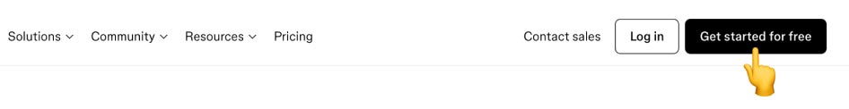
-
Заповнюємо перший крок форми реєстрації — вводимо вашу електронну адресу в полі Email. Натискаємо кнопку Continue with email і переходимо до наступного кроку. Є й інші способи реєстрації (наприклад, за допомогою облікового запису Google), але вони не такі універсальні;

-
Заповнюємо другий крок форми реєстрації — Вигадуємо пароль та вводимо його в поле Password. Email і пароль можна буде змінити пізніше за необхідності.

-
Підтвердження через пошту — ви ж знаєте, що в більшості сервісів потрібно підтвердити адресу пошти на випадок, якщо ви, наприклад, забудете пароль. Памʼятайте, що інколи запити можуть приходити у спам. Якщо лист потрапив туди, то відзначаємо, що це не спам. У Gmail, наприклад, для цього є спеціальна кнопка Report not spam, коли відкриваємо лист, який потрапив до спаму. Це дуже важливий момент, так як надалі, коли замовник залишатиме коментарі до вашого дизайну Figma, вам буде приходити лист-повідомлення про це. А реагувати на зауваження клієнта потрібно якнайшвидше. Отже, відкриваємо лист і натискаємо кнопку Confirm your email.


-
Вкажіть своє імʼя — його побачать інші учасники проекту, наприклад, ваш замовник. Воно завжди відображатиметься у верхньому правому куті запущеної програми (точніше перша літера). До речі, якщо не вказувати ім'я, воно буде автоматично згенероване з адреси електронної пошти. Якщо хочете отримувати новини про Figma електронною поштою, то ставимо галочку навпроти Subscribe to Figma tips and updates. Але ви завжди можете прочитати останні оновлення в блозі.
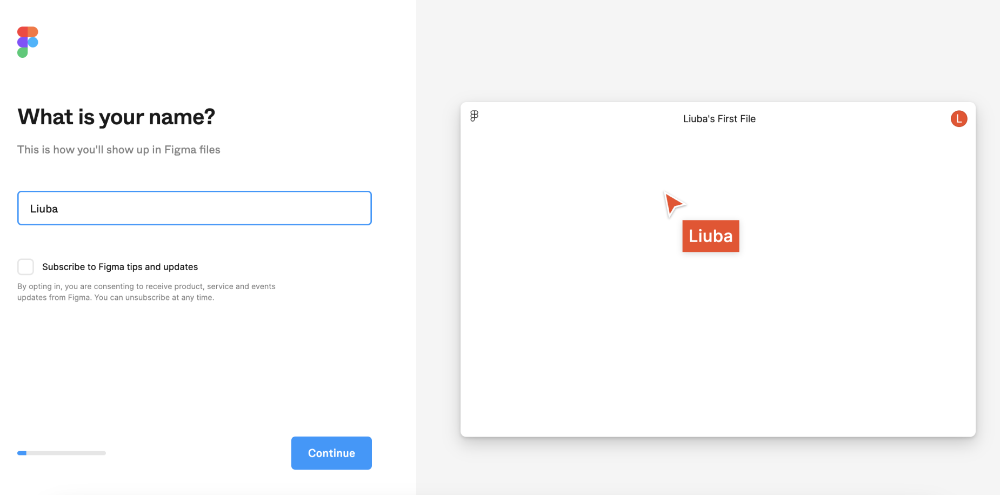
-
Вкажіть деталі про себе — це зроблено у вигляді опитувальника. У першому запитанні нас просять обрати напрямок, в якому ми працюватимемо. В нашому випадку актуально обрати Дизайн (Design).
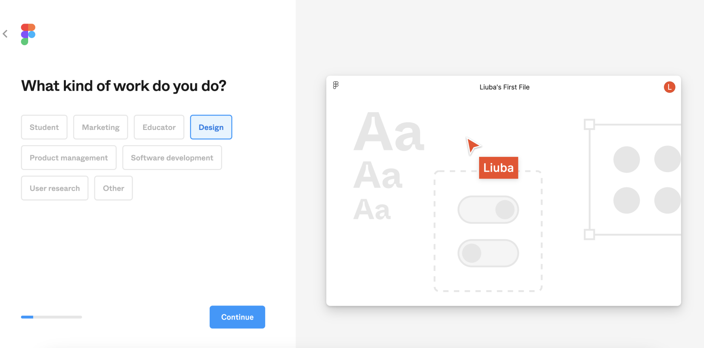
У наступному запитанні вас попросять обрати варіант, який найкраще описав би вашу роботу. Ви працюєте в агенції, на фрілансі або ж навчаєтесь в університеті. Якщо вагаєтесь що з цього обрати є також варіант Інше (Other).
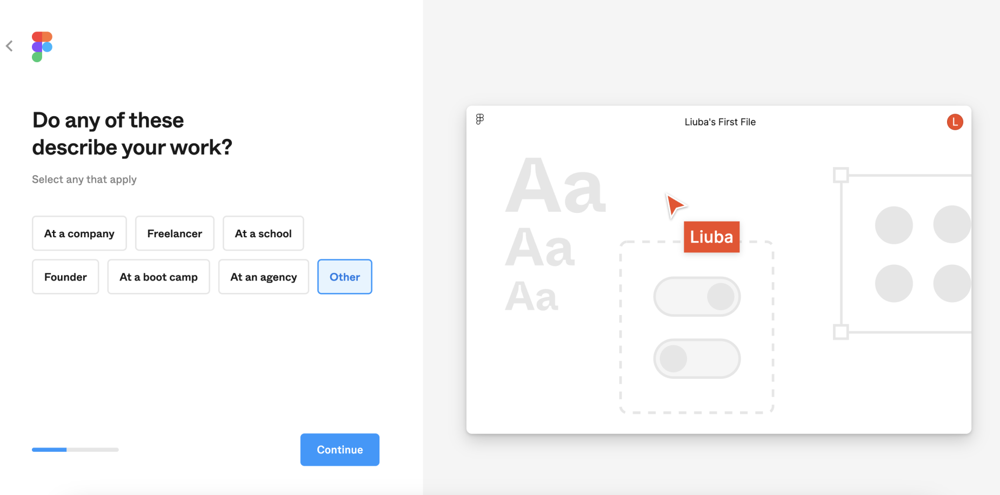
Ще одне запитання – чи співпрацюватимете ви з клієнтами або командою. Оскільки ми з вами лише починаємо вивчення програми, то я раджу обирати Лише себе (Just me).
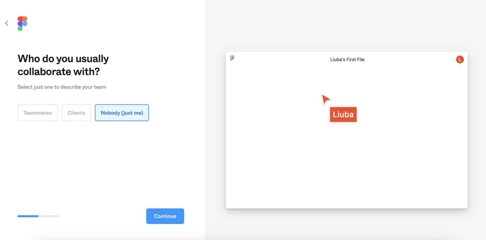
Додавання інших учасників. Figma пропонує нам одразу запросити інших людей та створити власну команду. Раджу поки пропустити цей крок – натискайте Пропустити (Skip).
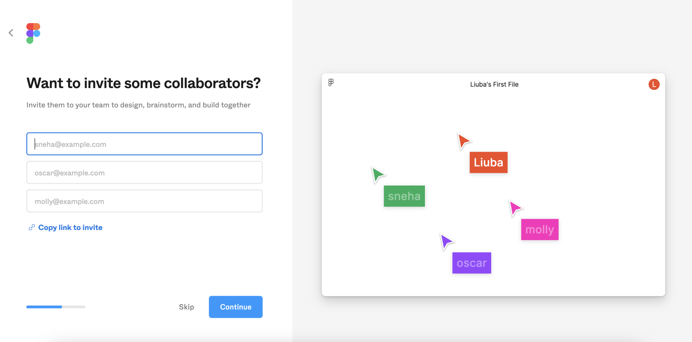
Для чого вам зараз Figma? Так звучить наступне запитання. Оскільки ви поки не маєте на меті створення комерційних проєктів, а скоріше за все кожен із вас має на меті щось своє: спробувати власні сили у якості дизайнера, підівчити програму чи будь що інше, то найлегшим буде обрати варіант Інше (Other).
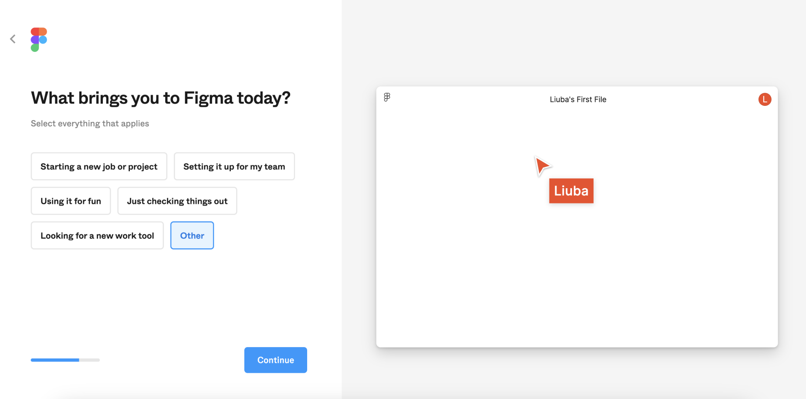
Наступне запитання: чи користувались ви Figma до цього? Від вашої відповіді залежатиме чи запропонує програма пройти швидке ознайомлення з функціоналом (туторіал). Оскільки далі ми будемо вивчати усі основні функції програми разом, ви можете натиснути перший або другий варіант відповіді: Так багато разів (Yes, many times) / Так, декілька разів (Yes, few times).
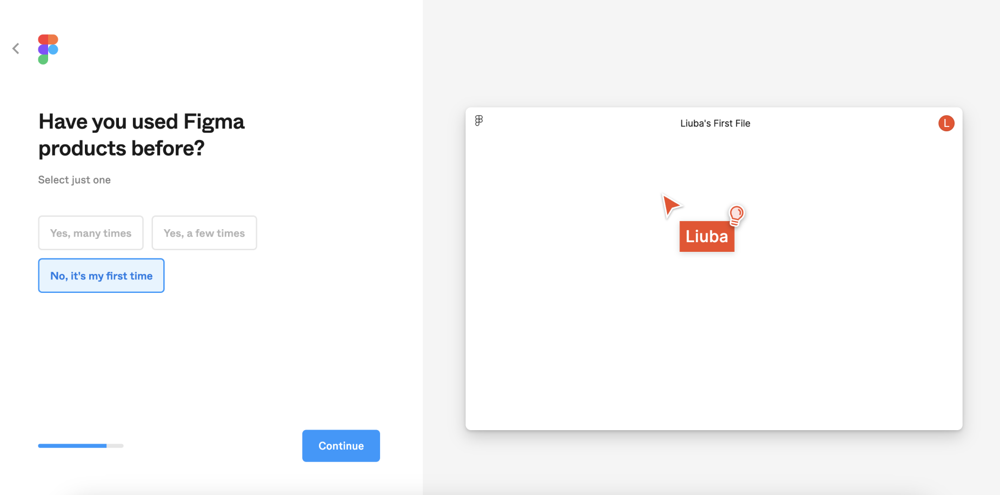
-
Обираємо тарифний план. В нашому випадку це буде безкошовний (free) план Starter. Він не має ніяких суттєвих обмежень доки ви будете самостійно працювати над своїми проєктами, вивчати функціонал програми, створювати дизайн для власних потреб. Також Figma дає можливість створити один повноцінний проєкт, з трьома файлами. У нього можна запросити інших учасників та керувати правами доступу до цього проєкту. Ви зможете давати та забирати права на спільне редагування, обмежувати перегляд та захистити власні роботи від копіювання.

Далі Figma пропонує вам одразу обрати один з трьох варіантів взаємодії: створення дизайну у файлі (те, чим ми будемо займатись 95% часу), створення дошки у FigJam (додатковий продукт Figma, у якому зручно оформлювати результати досліджень та проводити спільні «мозкові штурми» або ж відкрити нам Figma Slides (функціонал для створення презентацій). Я ж пропоную вам пропустити (skip) цей крок, щоб не заплутатись.
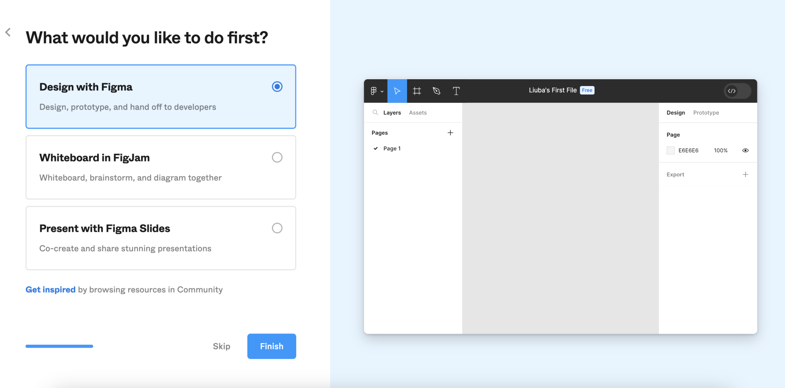
-
Все! — Figma готова до роботи. Розгорніть браузер на весь екран, щоб отримати максимум корисного простору. Є ще кілька нюансів, перш ніж ми почнемо;
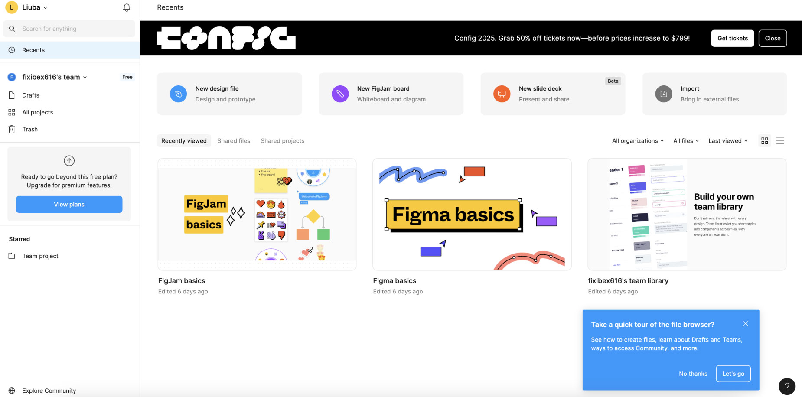
-
Як бачите ми перенаправлені на сторінку Figma з нещодавно відредагованими проектами (файлами). Figma зберігає всі ваші проекти на віддаленому сервері (це ще називають «у хмарі»). Це означає, що вам не потрібно нічого зберігати у себе на комп'ютері, все робиться автоматично. Праворуч ви можете бачити зображення ваших проектів. Дивіться, Figma додала кілька для ознайомлення.

Щоб створити перший проєкт потрібно натиснути на кнопку "New Design File". Тепер можна перейти до вивчення інтерфейсу Figma.
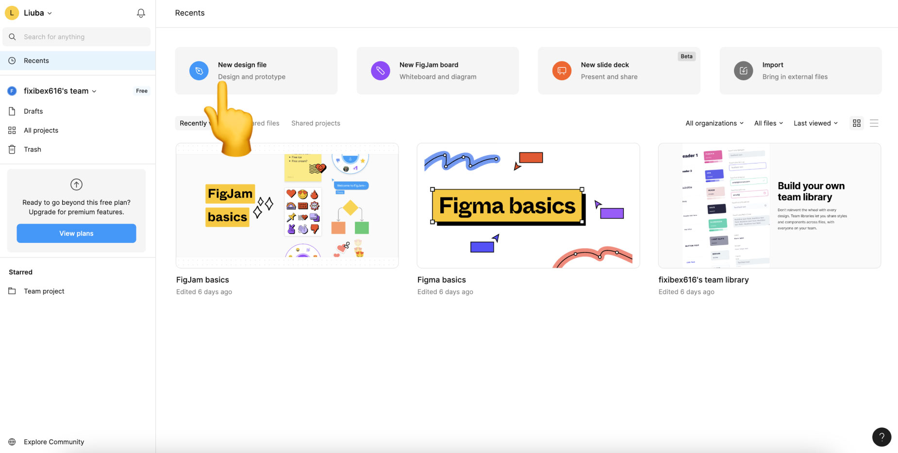


Головна сторінка Figma та створення нового файлу
Ви вже мали нагоду ознайомитись з тарифними планами Figma та побачили, що на разі ми обрали найпростіший та безкоштовний тариф. Він дає вам змогу створювати необмежену кількість проєктів для персонального використання. Розробники Figma назвали їх драфтами (Drafts), тобто чорновиками.
На головному екрані ліворуч, ви побачите список розділів:
- Ваше ім'я – перший пункт зверху. Тут ви можете налаштувати свій профіль: змінити ім'я, поштову адресу та пароль. Інші налаштування зараз не важливі;
- Search – пошук за проектами за назвою. Якщо у вас буде багато файлів, цей розділ може виявитися корисним;
- Recent – Нещодавно відкриті файли. Все впорядковано у хронологічному порядку. Зверху нещодавно використані файли;
- Drafts – чорновики (з повноцінним функціоналом) для особистого користування, навчання тощо.
- All Projects – це по суті папки, які дозволяють зручно розділяти вашу особисту і комерційну роботу. Вони розроблені для зручного сортування файлів. В безкоштовній версії нам доступний лише один проєкт, в який ми можемо перемістити файли з наших драфтів і отримати можливість безкоштовно потестувати функціонал, що доступний за підпискою.
- Trash – архів видалених проєктів. З ними можна зробити дві маніпуляції: відновити або видалити назавжди.
- Community – напрацювання спільноти: шаблони, плагіни та інші корисності. Про них поговоримо в наступних уроках, ще зарано;
Зверніть увагу, що з файлами можна проводити різні маніпуляції (створювати копію, видаляти, переіменовувати, поширювати і т.д.), натиснувши на їх мініатюру на загальній сторінці. Дивіться відео нижче.
Огляд інтерфейсу Figma
Інтерфейс будь-якого графічного редактора можна умовно розділити на кілька ключових елементів. Кожен з них виконує специфічну функцію та активно використовується під час роботи. Розглянемо кожну частину:

- Головне меню — складається зі списку команд, як глобальних (що не стосуються проекту, з яким ми зараз працюємо), так і контекстних, які застосовуються, наприклад, до вибраного об'єкта. Розглянемо кілька прикладів. Глобальна команда: перейти до переліку проектів (файлів). Локальна команда: Видалити вибраний об'єкт. Усі команди ми розглянемо окремо у всіх подробицях. Зараз вам потрібно лише знати, що при натисканні на цю кнопку випадає величезне меню з командами, які виконуються при натисканні на них;
- Панель інструментів — кожна іконка на панелі є окремим інструментом. Щоб його вибрати, ми натискаємо на іконку і вона підфарбовується в синій колір, сигналізуючи, що все готове до роботи. Після вибору інструменту його використовують у робочій області (наступний пункт). Наприклад, є інструмент малювання прямокутників. Сьогодні познайомимося з декількома корисними екземплярами;
- Робоча область (полотно) – вся магія відбувається тут. Тут ми малюємо фігури, використовуючи інструменти. Виділяємо примітиви, щоб змінити їх властивості (наприклад, колір) на панелі властивостей (наступний пункт);
- Панель властивостей — кожен вид об'єкта має унікальний набір властивостей. Наприклад, прямокутник має розмір, позицію та колір. Текст, на додачу до властивостей прямокутника, має ще і міжрядковий інтервал, і вирівнювання (ліворуч, праворуч, центром). Залежно від вибраного об'єкта панель може змінюватися до невпізнання;
- Панель шарів — зберігається список усіх створених об'єктів. Крім того, тут ми визначаємо, в якій послідовності їх показати (про це пізніше). На панелі шарів можна вибирати об'єкти як на робочій області. Це лише інший спосіб виділити об'єкт, щоб відредагувати або змінити його властивості.
Знаю, звучить складно, але, по суті, у нас виходить така послідовність дій, коли ми створюємо дизайн:
- Вибираємо інструмент — на панелі інструментів;
- Використовуємо інструмент — у робочій області. Наприклад, додаємо прямокутник або напис;
- Вибираємо існуючий об'єкт — за допомогою робочої області або панелі шарів;
- Змінюємо вибраний — за допомогою панелі властивостей (міняємо розташування, розміри, колір) або використовуючи контекстну команду головного меню (робимо копію);
- Змінюємо послідовність відображення об'єктів — використовуючи панель шарів;
Малюємо прямокутник
Прямокутник (Rectangle) – часто використовуваний примітив. Його можна застосувати для малювання не тільки прямокутнику, квадрату, а й навіть кола. Для малювання виконуємо таку послідовність:
- Обираємо інструмент Rectangle — клацаємо на іконку прямокутника на панелі інструментів. Або натискаємо клавішу R на клавіатурі. Кнопка має підсвічуватися синім;
- Задаємо початкову точку — для цього кликаємо та затискаємо ліву кнопку миші в будь-якому місці робочої області, щоб задати "початок" прямокутника. Не відпускаємо ліву кнопку миші;
- Задаємо розміри — переміщуємо мишу в будь-якому напрямку із затиснутою лівою кнопкою – вуаля – починає вимальовуватися прямокутник;
- Задаємо кінцеву точку — тепер відпускаємо ліву кнопку миші, щоб остаточно задати розміри фігури. Готово!
Так це виглядає в дії (щоб розгорнути відео на весь екран, використовуйте другу кнопку внизу праворуч плеєра):
Проаналізуємо, що сталося. Під час та після відображення прямокутника ви помітите, що у нього з'явилася синя рамка – це означає, що об'єкт виділено. Це називають bounding box (читається баундін бокс), що означає обмежуюча рамка. Під нею вказано розмір об'єкта в пікселях – про них ми говорили у попередньому уроці.
Панель властивостей праворуч моментально підлаштована під виділений прямокутник. З'явилися такі параметри:
- X – позиція об'єкта на осі Х (по горизонталі). Початок координат проходить у лівій верхній точці (зараз рухатимемо прямокутник і все зрозумієте);
- Y – позиція об'єкта по осі Y (по вертикалі);
- W – width (читається виз) або ширина об'єкта;
- H – height (читається хайт) або висота об'єкта.
Всі ці властивості вказуються у пікселях. Щоб змінити одну з них, достатньо натиснути на неї і ввести нове число з клавіатури, після чого натиснути Enter. Об'єкт миттєво відреагує.
У панелі шарів зліва з'явився рядок "Rectangle 1" з іконкою прямокутника. При створенні примітива автоматично створюється новий шар. Він підказує графічному редактору, у якій послідовності малювати фігури. Поки що це не має сенсу, але коли об'єктів стане багато, я покажу корисність шарів на прикладі.
Намалюйте ще два прямокутники. Зверніть увагу, що кожен раз вам потрібно знову виділити інструмент прямокутника, тому що після використання він скидається. Також після кожної нової фігури на панелі шарів з'являється новий рядок.
Виділяємо, переміщуємо та змінюємо розміри об'єктів
Спершу переконайтеся, що ви вибрали інструмент Move (читається мув), що означає переміщати. Іконка виглядає як курсор і є першою на панелі інструментів. Для швидкого виклику натисніть V. Далі:
- Щоб виділити об'єкт достатньо натиснути на нього в робочій області. Також можна натиснути по назві шару в лівій панелі. При кожному виділенні панель властивостей та панель шарів оновлюється. Для зняття виділення, клацаємо по порожньому простору робочої області або панелі шарів;
- По кутах виділеного об'єкта є білі квадратики, за допомогою яких можна змінити розміри. Для цього наведіть курсор на квадратик, затисніть ліву кнопку миші та перемістіть її. Відпустіть ліву кнопку миші, щоб застосувати новий розмір;
- щоб перемістити об'єкт потрібно навести на нього курсор, затиснути ліву кнопку миші і не відпускаючи перемістити мишку. В цей момент об'єкт виділиться і переслідуватиме мишку, поки ви не відпустите ліву кнопку.
Тренуємося на прямокутниках:
Під час переміщення та зміни розмірів змінюються відповідні параметри на панелі властивостей. Але це лише найпростіші способи взаємодії із фігурами. Існує ще кілька не настільки очевидних прийомів, але працювати з їх допомогою набагато ефективніше:
- Якщо до початку переміщення затиснути кнопку Shift, то об'єкт зміщуватиметься рівно вертикально або горизонтально в залежності від того, куди ви поведете курсор після затискання лівої кнопки миші;
- Можна змінити розмір об'єкта, потягнувши за одну з його граней, а не за кут, щоб змінити тільки висоту або ширину;
- Для збереження пропорцій під час зміни розміру об'єкта потрібно затиснути кнопку Shift. У такому разі співвідношення сторін збережеться і наприклад квадрат, залишиться квадратом;
- Ювелірно точно підігнати позицію фігури можна за допомогою клавіш-стрілок на клавіатурі. Один натиск перемістить виділений об'єкт на один піксель у відповідний бік. Щоб збільшити крок до 10 пікселів, потрібно затиснути клавішу Shift, одночасно натискаючи на стрілку. Можна також затискати стрілки, щоб отримати безперервне переміщення.
Є інші прийоми, але цього поки що буде достатньо для комфортної роботи. Випробуйте нові способи керування об'єктами:
Навігація
Той простір, що ви бачите в робочій області, це лише мала її частина. Уявіть, що на величезне полотно спрямована відеокамера. Ви можете спостерігати лише те, на що сфокусовано об'єктив. Звичайно, ви можете вибирати зручну позицію і навіть наближатися, щоб побачити деталі. Або віддалятися, щоб оцінити дизайн в цілому. Ознайомимося з новими прийомами для зручної навігації по проекту:
- Для переміщення камери затисніть пробіл, одночасно затиснувши ліву кнопку миші та перемістіть курсор у потрібному напрямку. Об'єкти на робочій області почнуть переміщатися відповідно до нового положення камери. Як бачите, довкола багато порожнього простору. Під час цієї маніпуляції курсор візьме зображення руки, нагадуючи, що перебуває в іншому режимі. Замість аналогії з камерою можна також уявити, що таким чином ми переміщуємо полотно, на якому відмальовані фігури;
- У верхньому правому куті відображається поточне значення масштабу камери. Так, наприклад, 100% означає, що ми всі бачимо 1 до 1, тобто натуральну величину. 200% означає, що все збільшено вдвічі. 25% – все зменшено вчетверо. Щоб збільшити масштаб, натисніть кнопку + (плюс). Щоб зменшити масштаб, натисніть - (мінус). Ще зручніше використовувати коліщатко прокрутки мишки. Якщо у вас Windows, то просто покрутіть його, щоб наблизити/віддалити камеру. На MacOs ще потрібно затиснути кнопку Command;
- Щоб швидко скинути масштаб до 100%, натисніть Shift + 0. Якщо вибрати якийсь шар на панелі ліворуч, клікнувши по ньому, то вказана комбінація перемістить камеру таким чином, що вміст опиниться по центру робочої області. Це зручно, коли ви втратили на увазі потрібний вам об'єкт і хочете сфокусуватися на ньому;
- Якщо потрібно побачити все, що є на сторінці – натисніть комбінацію Shift + 1;
Ці три прийоми дозволяють дуже швидко орієнтуватися у просторі:

- Позиція та розмір — після кліка на полі можна збільшувати/зменшувати значення з кроком в одиницю за допомогою кнопок-стрілок вгору/вниз. Щоб збільшити крок до 10, затискаємо Shift. Також варто зазначити, що у цих полях працюють найпростіші арифметичні операції. Наприклад, можна додати до поточного значення число написавши +8 і натиснувши Enter. Також підтримуються операції віднімання, множення та розподілу. Щоб швидко перейти до наступної властивості, натисніть Tab. Щоб перейти до попереднього, натискаємо Shift + Tab;
- Зафіксувати пропорції — дозволяє зберегти пропорції при зміні ширини або висоти через поля властивостей;
- Кут повороту — дозволяє повернути об'єкт на довільний кут;
- Заокруглення кутів — задає радіус заокруглення всіх кутів;

- Колір заливки — задає колір прямокутника. По кліку з'явиться вікно, після чого потрібно вибрати відповідний колір та його насиченість. Далі клацаємо на хрестик правому верхньому кутку вікна або в будь-якому місці поза вікном, щоб зберегти зміни;
- Додати обводку — додати ефект обводки за контуром фігури. Після активації з'являться нові налаштування;
- Колір обводки – на кліку з'явиться таке саме вікно, як і для кольору заливки;
- Товщина обводки — вказуємо товщину лінії;
- Видалити обводки — якщо вона вам не потрібна.
Цих властивостей вам вистачить з головою. У наступних уроках ми познайомимось з ними більш ретельно. А тепер подивимось, як це можна використовувати. Зокрема, найбільший інтерес для нас має можливість задати колір та заокруглити кути фігури:
Вікно вибору кольору
Зупинимося докладніше на вікні вибору кольору. Воно дозволяє дуже гнучко налаштовувати його відтінок, насиченість і навіть прозорість. Крім того, кожен колір має своє точне значення, яке можна скопіювати і вставити в колір заливки або обведення іншого об'єкта.
Для цього потрібно натиснути на поле зі значенням кольору, виділити його, натиснути праву кнопку миші та вибрати Copy (скопіювати). Далі вибираємо об'єкт, до якого хочемо застосувати скопійований колір, клацаємо по його полю кольору заливки або кольору обведення, виділяємо все значення, натискаємо праву кнопку миші, вибираємо Paste (вставити) та натискаємо. Набагато швидше використовувати комбінації Command + C, Command + V для MacOs та Ctrl + C, Ctrl + V для Windows.
Є ще швидші прийоми для копіювання та вставки кольорів, але про це у наступних уроках. А поки що освоюємо показані способи.
Додаємо текст
Це найпростіше. Спочатку вибираємо інструмент Text на панелі інструментів. Його іконка виглядає як велика літера T. Або використовуємо гарячу клавішу T. Далі виконуємо таку послідовність дій:
- Задаємо межі текстового блоку — це робиться так само, як створення прямокутника. Ці межі вказують, де текст буде автоматично переноситься на новий рядок, якщо ширини недостатньо. Крім того, вони задають рамки, щодо яких текст вирівнюватиметься;
- Вводимо текст — після створення меж текстового блоку мигаюча каретка натякне, що, власне, настав час вводити текст. Щоб зберегти наш текст, натисніть Escape;
- Змінюємо зовнішній вигляд тексту — тепер ми можемо встановити шрифт, колір, розмір, вертикальне та горизонтальне вирівнювання. Вирівнювання дозволяє вказати по якому краю розміщувати текст (ліворуч, праворуч чи по центру). Всі ці параметри знаходяться на панелі властивостей. Переконайтеся, що текстовий блок виділено.
Весь процес показаний на відео нижче. Роботі з текстом буде присвячено окремі уроки, це дуже об'ємна тема.
Малюємо лінію та стрілку
І остання на сьогодні пара примітивів. Процес створення також дуже схожий на прямокутник, а всі важливі властивості ми вже розглянули. Для вибору інструмента Line (лінія) або Arrow (стрілка) потрібно спочатку натиснути на стрілку біля іконки прямокутника, а потім з меню вибрати потрібний інструмент. Існують і гарячі клавіші для швидкої активації: Line - L, Arrow - Shift + L. Дивимося відео та пробуємо самостійно:
Є один корисний прийом. Якщо під час створення лінії або стрілки затиснути Shift, то фігура малюватиметься під кутом кратним 45 градусам.
Навіщо потрібні шари?
Проведу аналогію з реальним світом, щоб була зрозуміла концепція. Уявіть, що ви маєте кілька файлів формату А4. Ті прозорі файли, в які вставляється офісний папір. Так ось, у кожен із цих файлів вставляємо одну вирізану з кольорового картону фігуру (коло, прямокутник і так далі). У нас вийшло кілька фігур у прозорих файлах. Тепер вставляємо їх у папку та перевертаємо всі файли на один бік. Тепер можна побачити, що деякі фігури перекриваються іншими. У цій аналогії папка – це панель шарів, файл – шар, а картонна фігура – це примітив усередині цього шару. Подивимося, навіщо потрібні шари у Figma:
-
Упорядковують та групують об'єкти — шари можна перейменовувати, що дозволяє об'єднувати їх за змістом (наприклад, кнопки, списки, вікна, екрани тощо). Крім того, групи та фрейми можна вкласти один в одного, створюючи цілі ієрархії. Всі ці можливості дозволяють швидко та зручно працювати з дуже великими проектами. Продовжуючи аналогію з реальним світом уявімо, що прозорий файл можна вставити кілька картонних фігур;
-
Для можливості виділити та сфокусуватися на об'єкті – крім того, в панелі шарів є пошук за назвою;
-
Визначають послідовність відображення – шари однойменної панелі розташовані один за одним списком зверху вниз. Найвищий шар завжди буде намальований першим, а найнижчий - останнім. З файлами така сама ситуація, фігури у верхніх файлах перекривають нижні.
Погляньте на наочний приклад нижче. Щоб змінити порядок малювання, достатньо перетягнути шар у лівій панелі вниз або вгору. Уявіть, що ми переставляємо файли в папці вище або нижче, щоб отримати такий самий ефект.
А тепер спробуємо сформулювати визначення шару у Figma. Шар (layer) – це абстрактний об'єкт з назвою, який відображає поміщений у нього примітив (фігуру) відповідно до глибини малювання. Шари можна обʼєднувати в фрейми (тобто групувати за сенсом), але про це в наступному уроці.
Корисні команди
- Відмінити останні дії — іноді можна щось зробити з необережності і потрібно повернутися в часі на кілька дій тому. Для цього натискаємо Command + Z у MacOs або Ctrl + Z у Windows. Можна виконати кілька разів, доки не відкотимося до потрібного стану;
- Робимо дублікат об'єкта — виділяємо потрібний об'єкт і натискаємо Command + D у MacOs або Ctrl + D у Windows. Копія з'явиться на тому самому місці, де був оригінал і буде виділеною. Ви одразу можете почати працювати з нею, наприклад, переміщати стрілочками, що дуже зручно;
- Видаляємо об'єкт — виділяємо потрібний об'єкт і натискаємо Delete. Він відразу зникне з робочої області та панелі шарів;
- Виділяємо кілька об'єктів відразу — затискаємо ліву кнопку миші і тягнемо курсів у будь-якому напрямку, щоб у рамку, що з'явилася, потрапило кілька об'єктів. Далі відпускаємо ліву кнопку миші та маємо кілька виділених об'єктів. Що тепер можна зробити з ними? Можна перемістити скопом як один об'єкт або змінити розміри. Якщо об'єкти одного виду можна змінити властивості для всіх за один раз.
- Оберіть будь-який сайт та відмалюйте кнопку з цього сайту. Біля кнопки текстом додайте посилання на цей сайт.
Намалюйте по три іконки згідно свого варіанту, наведених нижче, використовуючи вивчені інструменти. Не потрібно намагатись повторити іконки один в один, вони можуть трохи відрізнятись;

- Здати посилання на проєкт виконаних завдань у Figma